Plot a compareFits Object
plot.compareFits.RdA Trellis dotplot of the values being compared, with different
rows per group, is generated, with a different panel for each
coefficient. Different symbols (colors) are used for each object being
compared.
Usage
# S3 method for compareFits
plot(x, subset, key, mark, ...)Arguments
- x
an object of class
"compareFits".- subset
an optional logical or integer vector specifying which rows of
xshould be used in the plots. If missing, all rows are used.- key
an optional logical value, or list. If
TRUE, a legend is included at the top of the plot indicating which symbols (colors) correspond to which objects being compared. IfFALSE, no legend is included. If given as a list,keyis passed down as an argument to thetrellisfunction generating the plots (dotplot). Defaults toTRUE.- mark
an optional numeric vector, of length equal to the number of coefficients being compared, indicating where vertical lines should be drawn in the plots. If missing, no lines are drawn.
- ...
optional arguments passed down to the
trellisfunction generating the plots.
Value
A Trellis dotplot of the values being compared, with rows
determined by the groups and panels by the coefficients.
Author
José Pinheiro and Douglas Bates bates@stat.wisc.edu
Examples
example(compareFits) # cF12 <- compareFits(coef(lmList(Orthodont)), .. lme(*))
#>
#> cmprFt> fm1 <- lmList(Orthodont)
#>
#> cmprFt> fm2 <- lme(fm1)
#>
#> cmprFt> (cF12 <- compareFits(coef(fm1), coef(fm2)))
#> , , (Intercept)
#>
#> coef(fm1) coef(fm2)
#> M16 16.95 16.57335
#> M05 13.65 15.58444
#> M02 14.85 16.03361
#> M11 20.05 17.65160
#> M07 14.95 16.15314
#> M08 19.75 17.62141
#> M03 16.00 16.58721
#> M12 13.25 15.76312
#> M13 2.80 12.63156
#> M14 19.10 17.66546
#> M09 14.40 16.31671
#> M15 13.50 16.22614
#> M06 18.95 17.97875
#> M04 24.70 19.76157
#> M01 17.30 17.81269
#> M10 21.25 19.41435
#> F10 13.55 14.47973
#> F09 18.10 16.47016
#> F06 17.00 16.14053
#> F01 17.25 16.27515
#> F05 19.60 17.27792
#> F07 16.95 16.57335
#> F02 14.20 15.74926
#> F08 21.45 18.01143
#> F03 14.40 15.98832
#> F04 19.65 17.83027
#> F11 18.95 17.97875
#>
#> , , age
#>
#> coef(fm1) coef(fm2)
#> M16 0.550 0.5913314
#> M05 0.850 0.6857856
#> M02 0.775 0.6746930
#> M11 0.325 0.5413592
#> M07 0.800 0.6950852
#> M08 0.375 0.5654489
#> M03 0.750 0.6960376
#> M12 1.000 0.7747493
#> M13 1.950 1.0738541
#> M14 0.525 0.6460653
#> M09 0.975 0.7960939
#> M15 1.125 0.8683629
#> M06 0.675 0.7433764
#> M04 0.175 0.5943002
#> M01 0.950 0.8758698
#> M10 0.750 0.8713317
#> F10 0.450 0.4095946
#> F09 0.275 0.4421434
#> F06 0.375 0.4736281
#> F01 0.375 0.4819755
#> F05 0.275 0.4922275
#> F07 0.550 0.5913314
#> F02 0.800 0.6700432
#> F08 0.175 0.4857848
#> F03 0.850 0.7108276
#> F04 0.475 0.6303230
#> F11 0.675 0.7433764
#>
plot(cF12)
